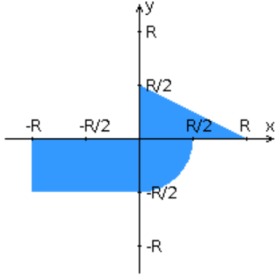

Разработанная HTML-страница должна удовлетворять следующим требованиям:
Для расположения текстовых и графических элементов используется блочная верстка.
Данные формы передаются на обработку посредством GET-запроса.
Таблицы стилей располагаются в самом веб-документе.
При работе с CSS продемонстрировано использование селекторов идентификаторов, селекторов элементов,
селекторов атрибутов, селекторов потомств а также такие свойства стилей CSS, как наследование и каскадирование.
HTML-страница имеет "шапку", содержащую ФИО студента, номер группы и новер варианта. При оформлении шапки
явным образом задан шрифт (sans-serif), его цвет и размер в каскадной таблице стилей.
Отступы элементов ввода должны задаваться в пикселях.
Страница содержит сценарий на языке JavaScript, осуществляющий валидацию значений, вводимых пользователем
в поля формы. Любые некорректные значения (например, буквы в координатах точки или отрицательный радиус) блокируются.